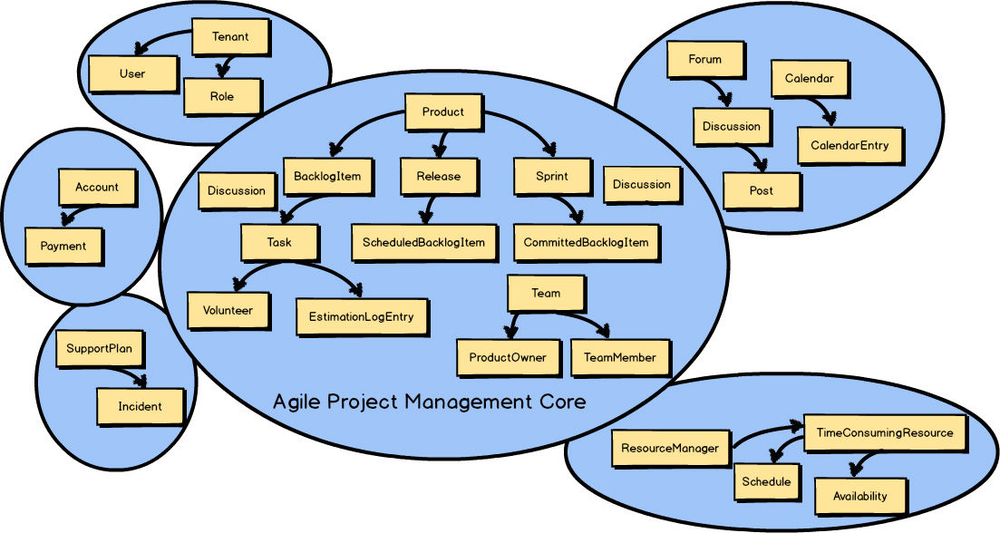
In previous chapters you learned that in addition to the Core Domain , there are multiple Bounded Contexts associated with every DDD project. All concepts that didn’t belong in the Agile Project Management Context —the Core Domain —were moved to one of several other Bounded Contexts.
You also learned that the Agile Project Management Core Domain
would have to integrate with other Bounded Contexts.
That integration is known in DDD as Context Mapping.
You can see in the previous Context Map
that Discussion
exists in both Bounded Contexts.
Recall that this is because the Collaboration Context
is the source of the Discussion
, and that the Agile Project Management Context
is the consumer of the Discussion
.
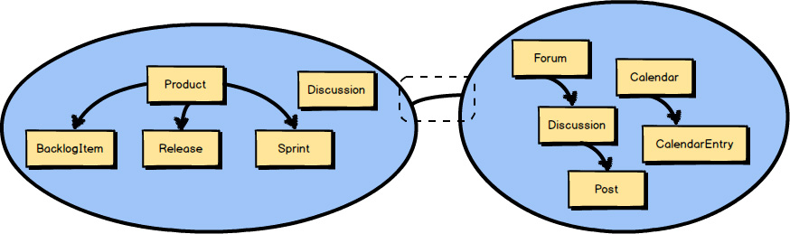
A Context Mapping is highlighted in this diagram by the line inside the dashed box. (The dashed box is not part of the Context Mapping but is used only to highlight the line.) It’s actually this line between the two Bounded Contexts that represents a Context Mapping. In other words, the line indicates that the two Bounded Contexts are mapped in some way. There will be some inter-team dynamic between the two Bounded Contexts as well as some integration.
Considering that in two different Bounded Contexts there are two Ubiquitous Languages , this line represents the translation that exists between the two languages. By way of illustration, imagine that two teams need to work together, but they work across national boundaries and don’t speak the same language. Either the teams would need an interpreter, or one or both teams would have to learn a great deal about the other’s language. Finding an interpreter would be less work for both teams, but it could be expensive in various ways. For example, imagine the extra time needed for one team to talk to the interpreter, and then for the interpreter to relay the statements to the other team. It works fine for the first few moments but then becomes cumbersome. Still, the teams might find this a better solution than learning and embracing a foreign language and constantly switching between languages. And, of course, this describes the relationship only between two teams. What if there are a few other teams involved? Similarly, the same trade-offs would exist when translating one Ubiquitous Language into another, or in some other way adapting to another Ubiquitous Language.
When we talk about Context Mapping , what is of interest to us is what kind of inter-team relationship and integration is represented by the line between any two Bounded Contexts. Well-defined boundaries and contracts between them support controlled changes over time. There are several kinds of Context Mappings , both team and technical, that can be represented by the line. In some cases both an inter-team relationship and an integration mapping will be blended.
What relationships and integrations can be represented by the Context Mapping line? I will introduce them to you now.
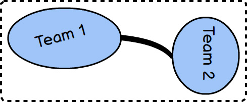
A Partnership relationship exists between two teams. Each team is responsible for one Bounded Context. They create a Partnership to align the two teams with a dependent set of goals. It is said that the two teams will succeed or fail together. Since they are so closely aligned, they will meet frequently to synchronize schedules and dependent work, and they will have to use continuous integration to keep their integrations in harmony. The synchronization is represented by the thick mapping line between the two teams. The thick line indicates the level of commitment required, which is quite high.
It can be challenging to maintain a Partnership over the long term, so many teams that enter a Partnership may do best to set limits on the term of the relationship. The Partnership should last only as long as it provides an advantage, and it should be remapped to a different relationship when the advantage is trumped by the drain of commitment.
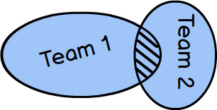
A Shared Kernel , depicted on page 54 by the intersection of the two Bounded Contexts , describes the relationship between two (or more) teams that share a small but common model. The teams must agree on what model elements they are to share. It’s possible that only one of the teams will maintain the code, build, and test for what is shared. A Shared Kernel is often very difficult to conceive in the first place, and difficult to maintain, because you must have open communication between teams and constant agreement on what constitutes the model to be shared. Still, it is possible to be successful if all involved are committed to the idea that the kernel is better than going Separate Ways (see the later section).
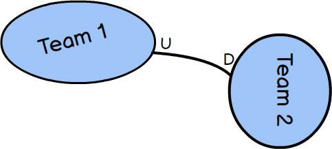
A Customer-Supplier describes a relationship between two Bounded Contexts and respective teams, where the Supplier is upstream (the U in the diagram) and the Customer is downstream (the D in the diagram). The Supplier holds sway in this relationship because it must provide what the Customer needs. It’s up to the Customer to plan with the Supplier to meet various expectations, but in the end the Supplier determines what the Customer will get and when. This is a very typical and practical relationship between teams, even within the same organization, as long as corporate culture does not allow the Supplier to be completely autonomous and unresponsive to the real needs of Customers.
A Conformist relationship exists when there are upstream and downstream teams, and the upstream team has no motivation to support the specific needs of the downstream team. For various reasons the downstream team cannot sustain an effort to translate the Ubiquitous Language of the upstream model to fit its specific needs, so the team conforms to the upstream model as is. A team will often become a Conformist , for example, when integrating with a very large and complex model that is well established. Example: Consider the need to conform to the Amazon.com model when integrating as one of Amazon’s affiliate sellers.
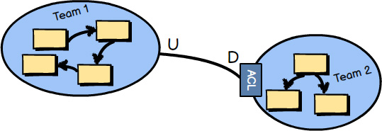
An Anticorruption Layer is the most defensive Context Mapping relationship, where the downstream team creates a translation layer between its Ubiquitous Language (model) and the Ubiquitous Language (model) that is upstream to it. The layer isolates the downstream model from the upstream model and translates between the two. Thus, this is also an approach to integration.
Whenever possible, you should try to create an Anticorruption Layer between your downstream model and an upstream integration model, so that you can produce model concepts on your side of the integration that specifically fit your business needs and that keep you completely isolated from foreign concepts. Yet, just like hiring a translator to act between two teams speaking different languages, the cost could be too high in various ways for some cases.
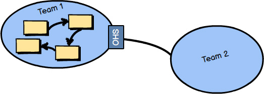
An Open Host Service defines a protocol or interface that gives access to your Bounded Context as a set of services. The protocol is “open” so that all who need to integrate with your Bounded Context can use it with relative ease. The services offered by the application programming interface (API) are well documented and a pleasure to use. Even if you were Team 2 in this diagram and could not take time to create an isolating Anticorruption Layer for your side of the integration, it would be much more tolerable to be a Conformist to this model than many legacy systems you may encounter. We might say that the language of the Open Host Service is much easier to consume than that of other types of systems.
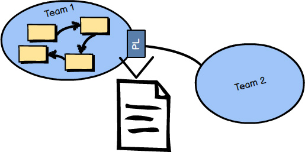
A Published Language , illustrated in the image at the bottom of page 57 , is a well-documented information exchange language enabling simple consumption and translation by any number of consuming Bounded Contexts. Consumers who both read and write can translate from and into the shared language with confidence that their integrations are correct. Such a Published Language can be defined with XML Schema, JSON Schema, or a more optimal wire format, such as Protobuf or Avro. Often an Open Host Service serves and consumes a Published Language , which provides the best integration experience for third parties. This combination makes the translations between two Ubiquitous Languages very convenient.
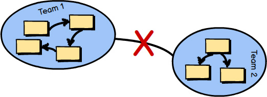
Separate Ways describes a situation where integration with one or more Bounded Contexts will not produce significant payoff through the consumption of various Ubiquitous Languages. Perhaps the functionality that you seek is not fully provided by any one Ubiquitous Language. In this case produce your own specialized solution in your Bounded Context and forget integrating for this special case.
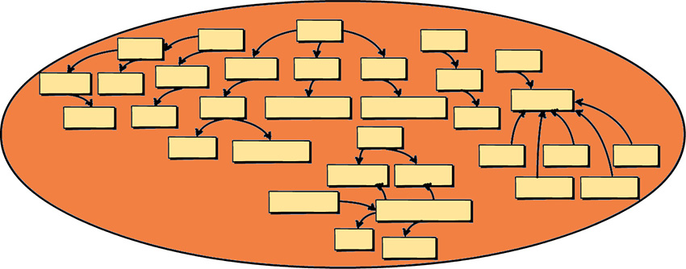
You already learned plenty about Big Ball of Mud in the previous chapters, but I am going to reinforce the serious problems you will experience when you must work in or integrate with one. Creating your own Big Ball of Mud should be avoided like the plague.
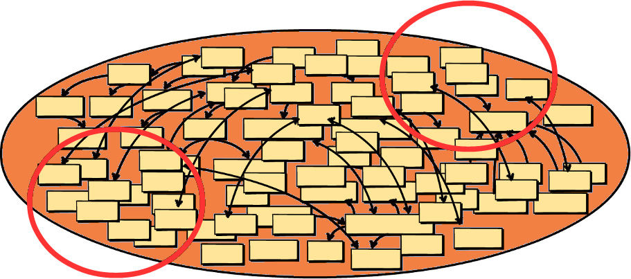
Just in case that’s not enough warning, here’s what happens over time when you are responsible for creating a Big Ball of Mud: (1) A growing number of Aggregates cross-contaminate because of unwarranted connections and dependencies. (2) Maintaining one part of the Big Ball of Mud causes ripples across the model, which leads to “whack-a-mole” issues. (3) Only tribal knowledge and heroics—speaking all languages at once—save the system from complete collapse.
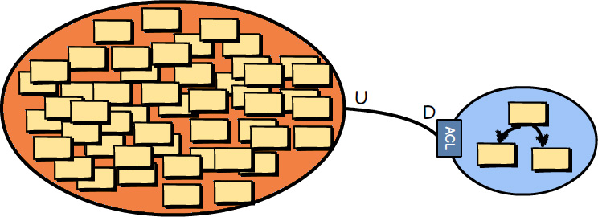
The problem is that there are already many Big Balls of Mud out there in the wide world of software systems, and the number will no doubt grow every month. Even if you are able to avoid creating a Big Ball of Mud by employing DDD techniques, you may still need to integrate with one or more. If you must integrate with one or more, try to create an Anticorruption Layer against each legacy system in order to protect your own model from the cruft that would otherwise pollute your model with the incomprehensible morass. Whatever you do, don’t speak that language!
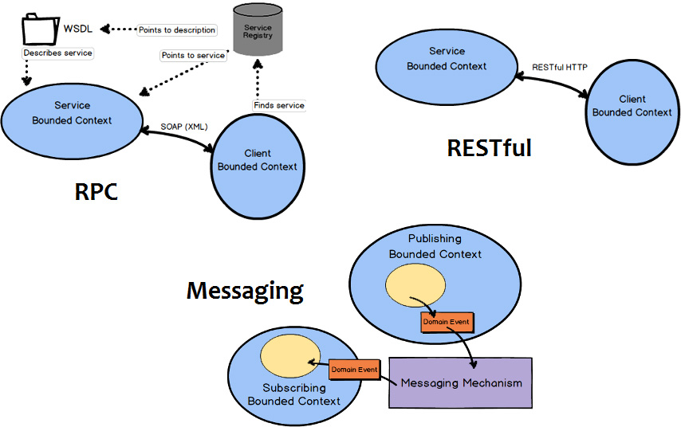
You may be wondering what specific kind of interface would be supplied to allow you to integrate with a given Bounded Context. That depends on what the team that owns the Bounded Context provides. It could be RPC via SOAP, or RESTful interfaces with resources, or it could be a messaging interface using queues or Publish-Subscribe. In the least favorable of situations you may be forced to use database or file system integration, but let’s hope that doesn’t happen. Database integration really should be avoided, and if you are forced to integrate that way, you really should be sure to isolate your consuming model by means of an Anticorruption Layer.
Let’s take a look at three of the more trustworthy integration types. We will move from the least robust to the most robust integration approaches. First we will look at RPC, followed by RESTful HTTP, and then messaging.
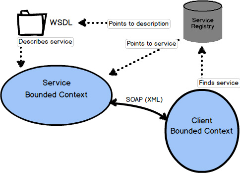
Remote Procedure Calls, or RPC, can work in a number of ways. One popular way to use RPC is via the Simple Object Access Protocol, or SOAP. The idea behind RPC with SOAP is to make using services from another system look like a simple, local procedure or method invocation. Still, the SOAP request must travel over the network, reach the remote system, perform successfully, and return results over the network. This carries the potential for complete network failure, or at least latency that is unanticipated when first implementing the integration. Additionally, RPC over SOAP also implies strong coupling between a client Bounded Context and the Bounded Context providing the service.
The main problem with RPC, using SOAP or another approach, is that it can lack robustness. If there is a problem with the network or a problem with the system hosting the SOAP API, your seemingly simple procedure call will fail entirely, giving only error results. Don’t be fooled by the seeming ease of use.
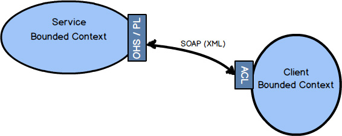
When RPC works—and it mostly works—it can be a very useful way to integrate. If you can influence the design of the service Bounded Context , it would be in your best interests if there is a well-designed API that provides an Open Host Service with a Published Language. Either way, your client Bounded Context can be designed with an Anticorruption Layer to isolate your model from unwanted outside influences.
Integration using RESTful HTTP focuses attention on the resources that are exchanged between Bounded Contexts , as well as the four primary operations: POST, GET, PUT, and DELETE. Many find that the REST approach to integration works well because it helps them define good APIs for distributed computing. It’s difficult to argue against this claim given the success of the Internet and Web.
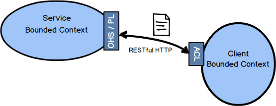
There is a very certain way of thinking when you use RESTful HTTP. I won’t get into the details in this book, but you should look into it before trying to employ REST. The book REST in Practice [RiP] is a good place to start.
A service Bounded Context that sports a REST interface should provide an Open Host Service and a Published Language. Resources deserve to be defined as a Published Language , and combined with your REST URIs they will form a natural Open Host Service.
RESTful HTTP will tend to fail for many of the same reasons that RPC does—network and service provider failures, or unanticipated latency. However, RESTful HTTP is based on the premise of the Internet, and who can find fault with the track record of the Web when it comes to reliability, scalability, and overall success?
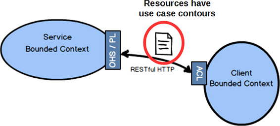
A common mistake made when using REST is to design resources that directly reflect the Aggregates in the domain model. Doing this forces every client into a Conformist relationship, where if the model changes shape the resources will also. So you don’t want to do that. Instead, resources should be designed synthetically to follow client-driven use cases. By “synthetic” I mean that to the client the resources provided must have the shape and composition of what they need, not what the actual domain model looks like. Sometimes the model will look just like what the client needs. But what the client needs is what drives the design of the resources, and not the model’s current composition.
When using asynchronous messaging to integrate, much can be accomplished by a client Bounded Context subscribing to the Domain Events published by your own or another Bounded Context. Using messaging is one of the most robust forms of integration because you remove much of the temporal coupling associated with blocking forms such as RPC and REST. Since you already anticipate the latency of message exchange, you tend to build more robust systems because you never expect immediate results.
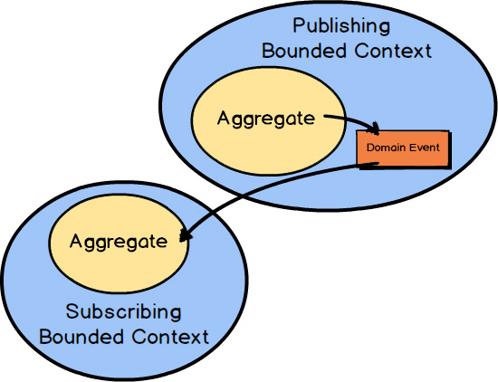
Typically an Aggregate in one Bounded Context publishes a Domain Event , which could be consumed by any number of interested parties. When a subscribing Bounded Context receives the Domain Event , some action will be taken based on its type and value. Normally it will cause a new Aggregate to be created or an existing Aggregate to be modified in the consuming Bounded Context.
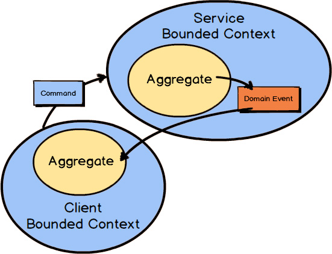
Of course, the foregoing assumes that a subscribing Bounded Context can always benefit from unsolicited happenings in the publishing Bounded Context. Sometimes, however, a client Bounded Context will need to proactively send a Command Message to a service Bounded Context to force some action. In such cases the client Bounded Context will still receive any outcome as a published Domain Event.
In all cases of using messaging for integration, the quality of the overall solution will depend heavily on the quality of the chosen messaging mechanism. The messaging mechanism should support At-Least-Once Delivery [Reactive] to ensure that all messages will be received eventually. This also means that the subscribing Bounded Context must be implemented as an Idempotent Receiver [Reactive] .
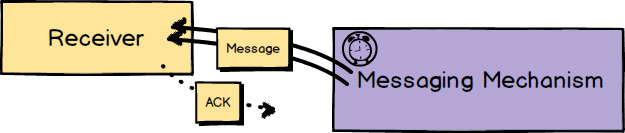
At-Least-Once Delivery [Reactive] is a messaging pattern where the messaging mechanism will periodically redeliver a given message. This will be done in cases of message loss, slow-reacting or downed receivers, and receivers failing to acknowledge receipt. Because of this messaging mechanism design, it is possible for the message to be delivered more than once even though the sender sends it only once. Still, that needn’t be a problem when the receiver is designed to deal with this.
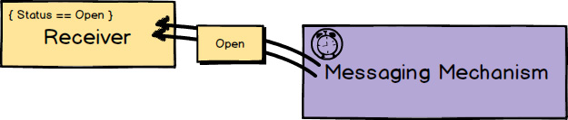
Whenever a message could be delivered more than once, the receiver should be designed to deal correctly with this situation. Idempotent Receiver [Reactive] describes how the receiver of a request performs an operation in such a way that it produces the same result even if it is performed multiple times. Thus, if the same message is received multiple times, the receiver will deal with it in a safe manner. This can mean that the receiver uses de-duplication and ignores the repeated message, or safely reapplies the operation with the exact same results that the previous delivery caused.
Due to the fact that messaging mechanisms always introduce asynchronous Request-Response [Reactive] communications, some amount of latency is both common and expected. Requests for service should (almost) never block until the service is fulfilled. Thus, designing with messaging in mind means that you will always plan for at least some latency, which will make your overall solution much more robust from the outset.
Returning to an example discussed in Chapter 2
, “Strategic Design with Bounded Contexts and the Ubiquitous Language
,” a question arises about the location of the official Policy
type. Remember that there are three different Policy
types in three different Bounded Contexts.
So, where does the “policy of record” live in the insurance enterprise? It’s possible that it belongs to the underwriting division since that is where it originates. For the sake of this example, let’s say it does belong to the underwriting division. So how do the other Bounded Contexts
learn about its existence?
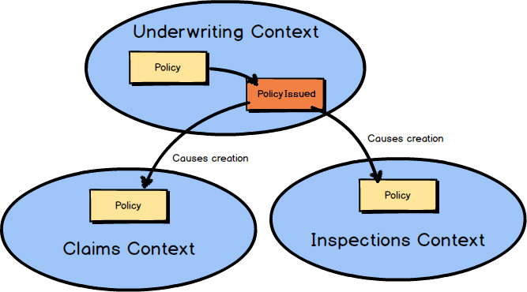
When a component of type Policy
is issued in the Underwriting Context
, it could publish a Domain Event
named PolicyIssued
.
Provided through a messaging subscription, any other Bounded Context
may react to that Domain Event
, which could include creating a corresponding Policy
component in the subscribing Bounded Context.
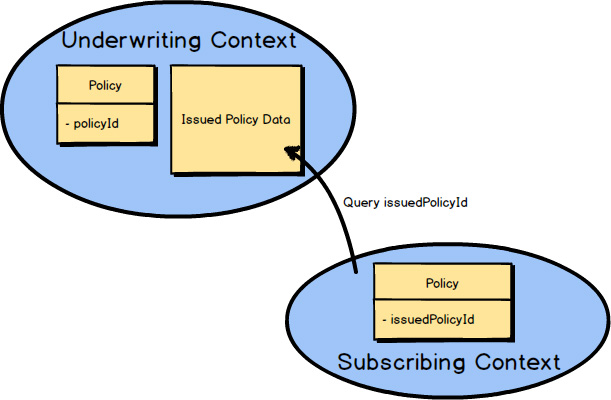
The PolicyIssued
Domain Event
would contain the identity of the official Policy
. Here it’s policyId
. Any components created in a subscribing Bounded Context
would retain that identity for traceability back to the originating Underwriting Context.
In this example the identity is saved as issuedPolicyId
. If there is a need for more Policy
data than the PolicyIssued
Domain Event
provided, the subscribing Bounded Context
can always query back on the Underwriting Context
for more information. Here the subscribing Bounded Context
uses the issuedPolicyId
to perform a query on the Underwriting Context.
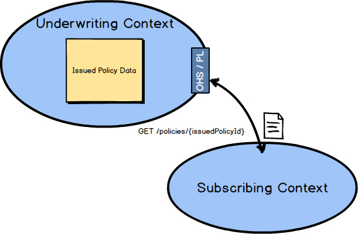
And how might the query back on the Underwriting Context
work? You could design a RESTful Open Host Service
and Published Language
on the Underwriting Context.
A simple HTTP GET with the issuedPolicyId
would retrieve the IssuedPolicyData
.
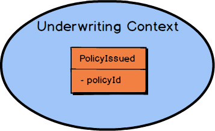
You’re probably wondering about the data details of the Policy-Issued
Domain Event.
I will provide Domain Event
design details in Chapter 6
, “Tactical Design with Domain Events
.”
Are you curious about what happened to the Agile Project Management Context example? Straying from that to the insurance business domain allowed you to examine DDD with multiple examples. That should have helped you grasp DDD even better. Don’t worry, we will return to the Agile Project Management Context in the next chapter.
In summary, you have learned:
• About the various kinds of Context Mapping relationships, such as Partnership , Customer-Supplier , and Anticorruption Layer
• How to use Context Mapping integration with RPC, with RESTful HTTP, and with messaging
• How Domain Events work with messaging
• A foundation on which you can build your Context Mapping experience
For thorough coverage of Context Maps , see Chapter 3 of Implementing Domain-Driven Design [IDDD] .